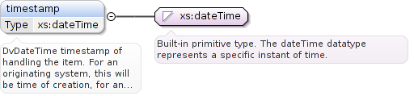

DvDateTime timestamp of handling the item. For an originating system, this will be time of creation,for an intermediate feeder system, this will be a time of accession or other time of handling, where available.
Diagram

Type
xs:dateTime
Properties
content
simple
minOccurs
0
maxOccurs
1
Source
<xs:element maxOccurs="1" minOccurs="0" name="timestamp" type="xs:dateTime"><xs:annotation><xs:documentation>DvDateTime timestamp of handling the item. For an originating system, this will be time of creation, for an intermediate feeder system, this will be a time of accession or other time of handling, where available.</xs:documentation></xs:annotation></xs:element>
Audit details for any system in a feeder system chain. Audit details here means the general notion ofwho/where/when the information item to which the audit is attached was created. None of the attributes are defined asmandatory, however, in different scenarios, various combinations of attributes will usually be mandatory. This can becontrolled by specifying feeder audit details in CCDs used when conjunction with non-MLHIM systems as interfacedefinitions.
<xs:complexType name="FeederAuditDetailsType"><xs:annotation><xs:documentation>Audit details for any system in a feeder system chain. Audit details here means the general notion of who/where/when the information item to which the audit is attached was created. None of the attributes are defined as mandatory, however, in different scenarios, various combinations of attributes will usually be mandatory. This can be controlled by specifying feeder audit details in CCDs used when conjunction with non-MLHIM systems as interface definitions.</xs:documentation></xs:annotation><xs:sequence><xs:element maxOccurs="1" minOccurs="0" ref="mlhim243:system-id"><xs:annotation><xs:documentation>Identifier of the system which handled the information item.</xs:documentation></xs:annotation></xs:element><xs:element maxOccurs="1" minOccurs="0" ref="mlhim243:provider"><xs:annotation><xs:documentation>Provider(s) who created, committed, forwarded or otherwise handled the item.</xs:documentation></xs:annotation></xs:element><xs:element maxOccurs="1" minOccurs="0" ref="mlhim243:location"><xs:annotation><xs:documentation>Identifier of the particular site/facility within an organisation which handled the item.</xs:documentation></xs:annotation></xs:element><xs:element maxOccurs="1" minOccurs="0" name="timestamp" type="xs:dateTime"><xs:annotation><xs:documentation>DvDateTime timestamp of handling the item. For an originating system, this will be time of creation, for an intermediate feeder system, this will be a time of accession or other time of handling, where available.</xs:documentation></xs:annotation></xs:element><xs:element maxOccurs="1" minOccurs="0" ref="mlhim243:subject"><xs:annotation><xs:documentation>Identifiers for subject of the received information item.</xs:documentation></xs:annotation></xs:element><xs:element maxOccurs="1" minOccurs="0" name="version-id" type="xs:string"><xs:annotation><xs:documentation>Applicable version information.</xs:documentation></xs:annotation></xs:element></xs:sequence></xs:complexType>